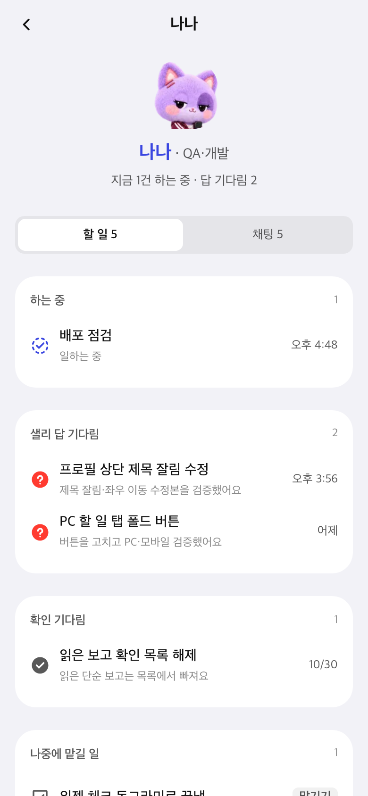
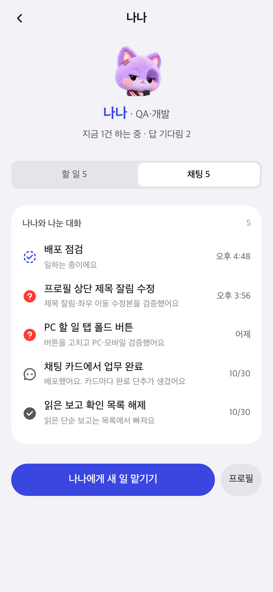
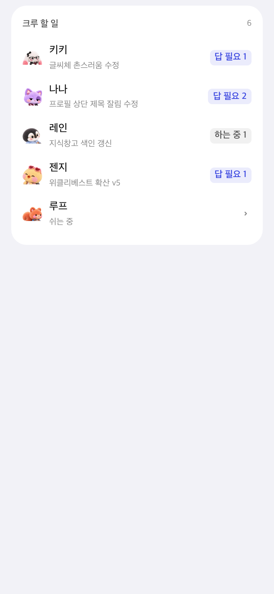
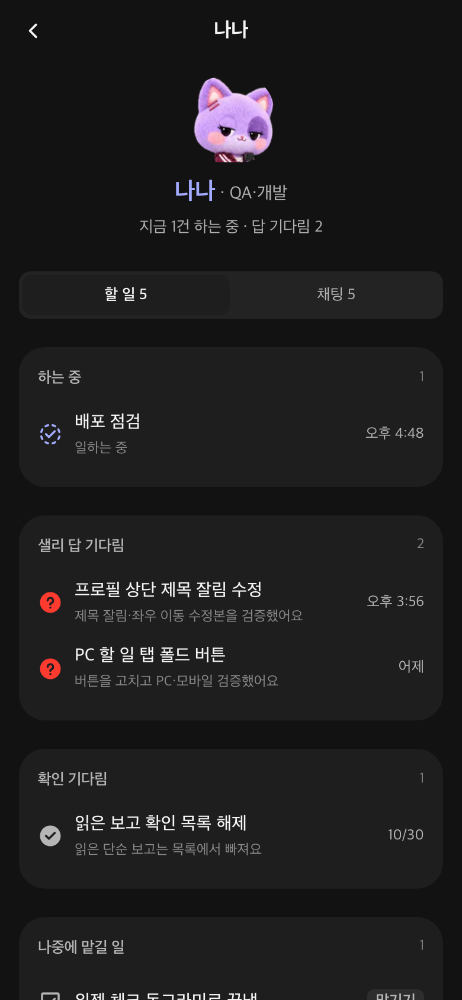

할 일·맡기기 위젯과 크루 페이지
11월 1일 · 위젯은 집맥에 설치 완료, 크루 페이지는 배포 전 확인용
위젯 두 개는 지금 바로 쓸 수 있습니다. 크루네 크루 페이지는 아래 시안과 실제 화면을 보고 「배포해」라고 하시면 올립니다.
1. 크루네 크루 페이지 시안
크루마다 할 일과 채팅을 한 화면에 모았습니다. 할 일 탭에서 크루 줄을 누르면 이 페이지가 열립니다.
시안: 크루 페이지 할 일 · 채팅, 할 일 탭에 더한 「크루 할 일」
2. 실제로 만든 화면
운영 중인 크루네 코드 위에 만든 실제 화면입니다. 시험 자료로 띄웠습니다.

나나 페이지 · 할 일
나나 페이지 · 채팅
할 일 탭 「크루 할 일」
다크 모드- 할 일 칸: 하는 중 · 샐리 답 기다림 · 확인 기다림(멈춘 일 포함) · 나중에 맡길 일
- 「맡기기」를 누르면 그 크루 방 입력칸에 내용이 채워져 열립니다(할 일 탭과 같은 방식)
- 채팅 칸: 그 크루와 나눈 대화 최신순, 누르면 그 대화로
- 프로필(성격·말투)은 아래 「프로필」 단추로 기존 화면을 엽니다
3. 위젯(설치 완료)
바탕화면 우클릭 → 위젯 편집 → 키키에서 「할 일」「맡기기」를 추가하세요.
할 일(큰) — 내 할 일 + 크루 할 일맡기기(중간) — 말로·글로 + 최근 맡긴 일
- 말로 맡기기: 누르면 「띵」 소리 뒤 12초 안에 말하면 키키가 맡을 일로 듣습니다(귀가 켜져 있을 때)
- 글로 맡기기: 입력 창에 쓰면 크루네 키키 방에 새 업무로 들어갑니다
- 할 일의 동그라미는 아직 표시만 합니다. 끝냄 처리는 크루네 할 일 탭에서 해 주세요